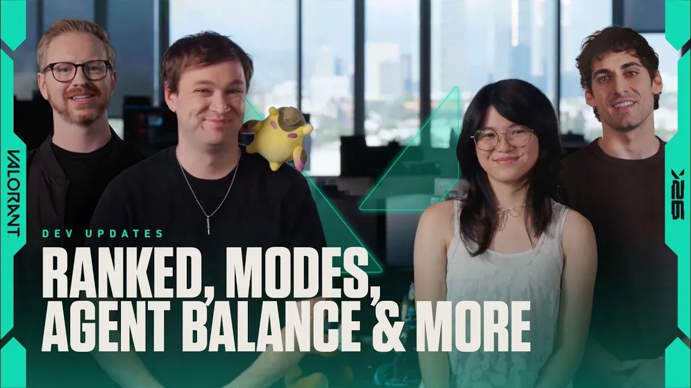

Riot publicó el dev update de Valorant para el Act III de la Season 2026 y hay bastante para desempacar. La noticia más grande es que el Parche 12.10, que llega el 27 de mayo, trae los Social Replays: la función más pedida de la comunidad finalmente llega al juego en forma completa.
Social Replays: la función del año
A partir del parche 12.10, vas a poder entrar al historial de partidas de cualquier amigo tuyo y desde ahí hacer clic en un botón para descargar y ver sus replays directamente. Nada de links, nada de exports manuales. El sistema está diseñado para facilitar el VOD review en grupo y compartir clutches o fails épicos con amigos. Llegó tarde, pero llegó.
Hotfixes de hoy: Neon y escopetas
Además del preview del 12.10, Riot aplicó hotfixes hoy mismo. Los cambios que estaban planificados para dentro de un mes se adelantaron porque la comunidad venía pidiendo que los solucionaran urgente:
Lo que viene en el Parche 13.0
Mientras el 12.10 está a una semana de distancia, el equipo también confirmó los cambios más grandes que vienen en el parche 13.0:
Cambios al ranked en 2027
El dev update también confirmó una transición grande para el sistema de recompensas de ranked. Los Gun Buddies que te ganás por rankear bien van a seguir existiendo en el Act III y VI de la Season 2026, pero es la última vez que van a ser la recompensa principal. Desde la Season 2027, el sistema cambia a un "Evolving Item": un objeto que evoluciona visualmente durante todo tu journey ranked, mostrando tu progresión de forma continua. Los detalles llegan en septiembre.
Cuándo llega el 12.10
El Parche 12.10 llega el 27 de mayo de 2026, marcando el inicio del Act III de la Season 2026. Si querés prepararte, empezá a acumular partidas para tener buen historial para compartir con tus amigos desde el día uno de los Social Replays.